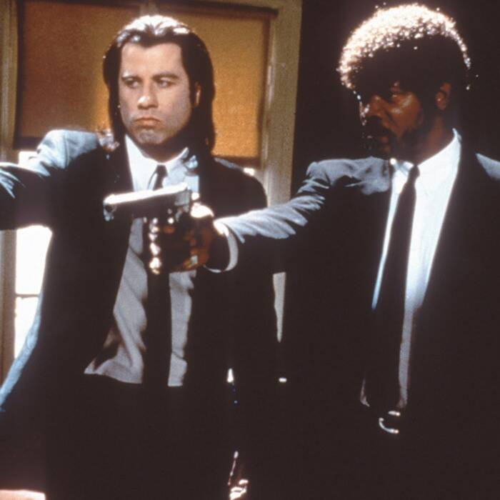

TRAMA PULP FICTION

CURIOSITÀ SU PULP FICTION
 Il film ricevette ben 7 nomination ai Premi Oscar, aggiudicandosene solo uno, come Miglior sceneggiatura originale. Il film consacra universalmente come stile cinematografico il pulp, un genere letterario dai contenuti forti, espliciti e violenti, che si intreccia con l'horror, il grottesco e il thriller. La pellicola fu un enorme successo e ottenne moltissimi riconoscimenti; inoltre, ridiede linfa alla carriera di John Travolta, candidato agli Oscar come Miglior attore protagonista. Il passo citato da Samuel L. Jackson ogni volta che uccide, Ezechiele 25,17, nella Bibbia non esiste realmente, ma Tarantino lo riprese da una citazione del film Karate Kiba interpretato da Sonny Chiba, definito dal regista come "il più grande attore di arti marziali dopo Bruce Lee". La celeberrima colonna sonora, che riprende brani di diverso genere, dal surf al soul, dal funk al rock'n'roll fino al blues, contribuì magistralmente alla creazione dell'ambientazione grottesca e non-sense dell'intera pellicola. Tra le scene divenute cult si ricorda la sfida di twist di Mia e Vincent sulle note di You Never Can Tell di Chuck Berry, la rapina iniziale della scena di apertura con la canzone Misirlou di Dick Dale & His Del-Tones, la chiacchierata di Vincent e Jules in auto con in sottofondo la musica funky di Jungle Boogie di Kool & The Gang e il ballo di Mia a casa, dopo la cena con Vincent e poco prima dell'overdose, sulle note di Girl, You’ll Be A Woman Soon di Urge Overkill. Le storie e i vari avvenimenti sono orchestrati magistralmente dal genio di Quentin Tarantino, che con Pulp Fiction ripropone la cronologia frammentata, già sperimentata con il suo film d'esordio, Le Iene.
FRASI CELEBRI DI PULP FICTION
Ringo (Tim Roth): Ma i giorni in cui dimentico sono finiti, stanno per cominciare i giorni in cui ricordo.
Jules (Samuel L. Jackson): Hamburger, dici? La colonna portante di ogni colazione vitaminica.
Mia (Uma Thurman): Non odi tutto questo? [...] I silenzi che mettono a disagio. Perché sentiamo la necessità di chiacchierare di puttanate per sentirci più a nostro agio? [...] È solo allora che sai di aver trovato qualcuno davvero speciale: quando puoi chiudere quella cazzo di bocca per un momento e condividere il silenzio in santa pace.
Mia: Se non sbaglio Marsellus, mio marito, il tuo capo, ti ha detto di portarmi a spasso e di fare tutto quello che voglio. E io voglio ballare, voglio vincere e voglio quel trofeo.
Mia: Tre pomodori camminano per la strada: papà pomodoro, mamma pomodoro e il pomodorino. Il pomodorino cammina con aria svagata e papà pomodoro allora si arrabbia e va da lui, lo schiaccia e dice: "Fai il concentrato".
Jules: Dunque, esaminiamo la situazione: normalmente le vostre budella si ritroverebbero sparpagliate nel locale, ma per caso mi avete trovato in un periodo di transizione, perciò non voglio uccidervi, voglio aiutarvi...